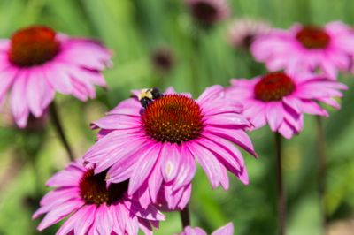
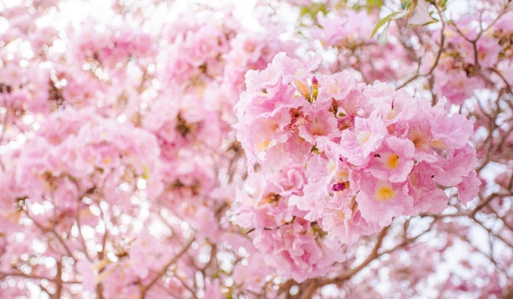
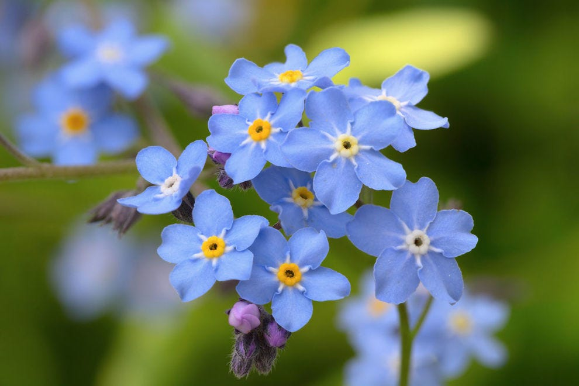
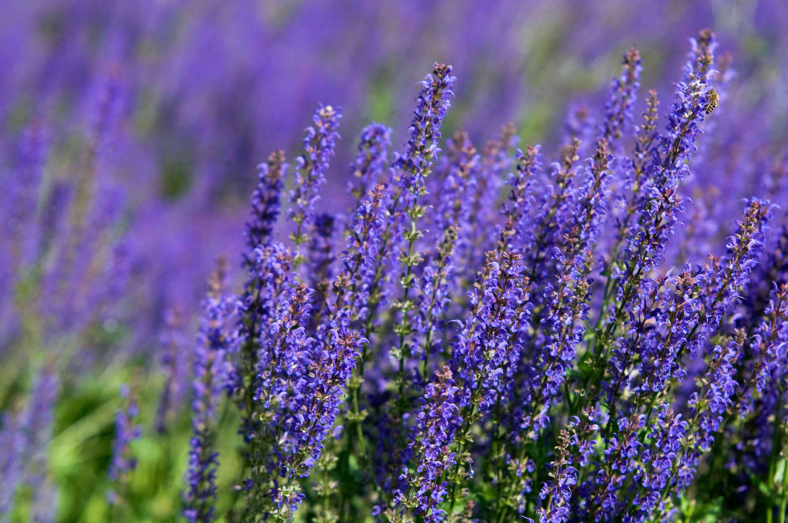

ÇİÇEK SEPETİ
Dünya'nın En Güzel Çiçekleriyle İlgili Resimler
YENİ ÇİÇEKLERİMİZİ GÖRDÜNÜZ MÜ?
Dünya'nın en renkli ve canlı çiçekleri sitemizde... Ev bitkilerinden hediyelik yapma çiçeklere kadar gökkuşağı gibi rengarenk skalamıza göz atın...
 MAVİ MENEKŞE
Menekşe, menekşegiller (Violaceae) familyasına bağlı Viola cinsini oluşturan çoğunlukla saksılarda yetiştirilen bitki türlerinin ortak adı. 400 ile 500 arası türü bulunmaktadır. Dünyanın birçok yerinde yetişebilmekle beraber en çok kuzey yarımkürede yetişir.
KALANŞO ÇİÇEĞİ

Kalanşo çiçeği; turuncu, pembe, beyaz, sarı gibi renkte açan çiçekleriyle iç mekanlara en çok yakışan bitkilerden biridir. Kalanşo çiçeği sukulent ailesine ait bir bitki türüdür. Bakımı kolay bir bitki olmasının yanında dikkat edilmesi gereken bazı noktaları vardır.
LAVANTA
Atlas Okyanusu adalarından Akdeniz çevresi ülkelerine ve Hindistana kadar uzanan geniş bir alanda yetişen, lavanta cinsi üyeleri, çalı görünümlü, toplu başak biçiminde mavi, morumsu ya da kırmızı çiçekler açan bitkilerdir.Lavanta çok güzel kokar.